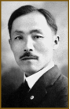

함께 걸음은 다가오는 3.1절을 맞이하여,
독립운동을 위해 힘써주신 위인들을
기억하기 위한 프로젝트 입니다.
독립운동을 위해 힘써주신 위인들을
기억하기 위한 프로젝트 입니다.

우리나라를 위해 노력하신 독립운동가들을
기억하기 위한 퀴즈들을 풀고,
3.1운동을 위한 태극기를 모아보세요!
기억하기 위한 퀴즈들을 풀고,
3.1운동을 위한 태극기를 모아보세요!